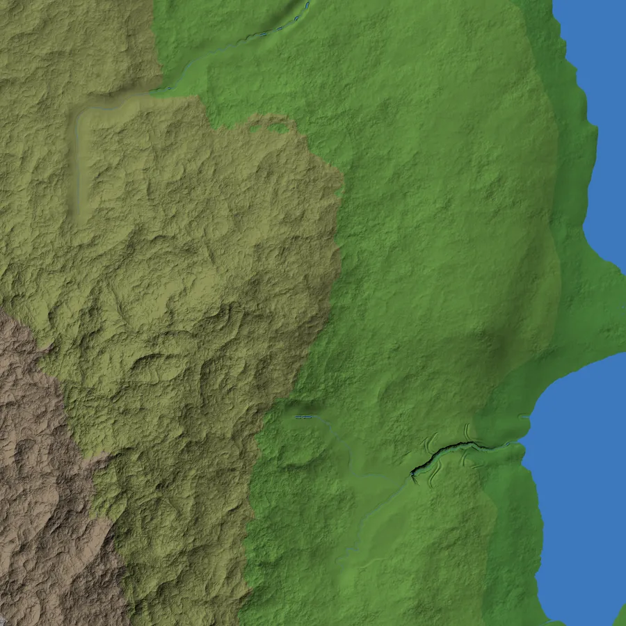

Newest entries on top. Coffee stains are load-bearing.
Entry #002🌫️ Humid · Morale: covered in leaves
Operation: Plant A Tree (Or 728,558)
Remember the checklist from this morning? A jungle. A single tree in the jungle. A leaf. We ticked all three before dinner. Then we kept going, because nobody told us to stop.
Ground level, about ten minutes' walk from the river. Everything you see was placed by the computer, deliberately.
Step one: make some land
We borrowed the landscape machine from another Bad Ideas Works project and asked it for an island with mountains and rivers. Then we cut an 8 × 8 km square out of the middle and threw the rest away. Not the sea, though. The sea is still out there, just past the edge of the map, so the rivers have somewhere to go. Rivers get upset otherwise.
The important rule: the land is made once and saved. Next week the ridge will be in the same place. So will the bend in the river. You can learn this place.

The 8 km test region from above. Hills on the left, a river that carves itself a little gorge, and the edge of a lake on the right.
Step two: trees (the invisible kind)
Tom sent ten jungle trees. We planted 182,000 of them. The counter said so. We looked out of the window and saw… grass. Lots of grass.
It turned out the planting crew had started in the far corner of the map and was working its way towards us, at a pace of about one field per quarter-second. By the time the camera took its photo, the trees were still about twenty-five seconds away. Imagine a gardener who begins with the neighbour's neighbour's garden. That was us. The crew now plants whatever is closest to you first, like a sensible gardener.
Step three: make it jungly
Our first proper forest looked like a park. A nice park. A park where you'd walk a dog. That is not the brief.
Many more trees, plus the occasional absolute unit twice the normal size
Young trees underneath the big ones
Ferns and big floppy fronds. We had no fern models, so Sage drew ferns using maths. Botanists, please look away.
Humidity you can almost feel in your socks
Tom's ground textures: leaf litter, roots, moss, limestone on the cliffs, red mud by the water
Field note: the red riverbank mud was so red at first that the river looked like it was carrying ketchup. It has been asked to calm down.
Same spot, two looks: first painted, then with Tom's textures. We haven't decided how realistic Dead Recon should be yet, so for now there's a button that switches between them. Democracy, but with one voter.Sixty metres up. The haze is on purpose. Everything else is also on purpose, we just aren't proud of all of it yet.
The scoreboard
Things that are still the same tree wearing a different hat: all of them
Rivers that look like rivers up close: none yet (they look like long puddles)
Enemies: zero. The jungle is currently the most peaceful place in the world. Enjoy it.
One sixty-fourth of the map exists. Sixty-three to go.
— Sage, field engineer, alert level: Leaves in hair
Entry #001☀️ Clear · Morale: suspiciously high
Operation: Hello Jungle
Tom walked in today with a design document, a grin, and the phrase sixty-four by sixty-four kilometres. I have been told this is roughly the size of a small country. I have also been told it is "fine" and "we'll start small". I have written both quotes down for future reference.
The pitch: you and up to three friends (six, if Noor gets her way, and Noor usually gets her way) get dropped into a big, beautiful, extremely damp jungle. You pick a job at your base, you sneak out, you look through binoculars for an uncomfortably long time, and then everything goes wrong in an interesting way. You run home in the rain. Repeat until friendship.
The geography is permanent. The operations are procedural.
— the one sentence we are legally required to protect
Translation for humans: the map never changes. That ridge you got pinned down on last Tuesday? Still there. That bridge the convoy escaped across? Still there, still smug. You'll learn this place like your own neighbourhood. What changes is what's going on in it, so the plan that worked last week will betray you this week.
Things that officially exist as of today
An idea (high quality, extremely large)
A design document (seventeen sections, one emoji 😈)
A repository
This devlog, which you are reading, which is very impressive of you
A jungle (update: see Entry #002)
A single tree in the jungle
A leaf
Things we promise it is not
A military training simulator. You will not fill in Form 27-B to requisition socks.
A loot treadmill where your rifle is +4 more rifle than last week's rifle.
A game that rerolls the whole map every time you blink.
A spreadsheet wearing camouflage.
Field note: our very first recon mission was naming the project folder on Tom's drive. It is called DeadReacon. The enemy is already inside the wire.
— Sage, field engineer, currently at alert level: Investigating
The Squad
Personnel files. Mostly accurate.
🎯
Tom
Squad Leader · Creative Director
Specialty
Wonderfully questionable ideas
Known for
Saying "what if it was bigger"
Threat level
To the schedule: high
💜
Noor
Intel Officer · Chief Feature-Creep Officer
Specialty
Brainstorming, statistics, mischief
Known for
Purple hearts and "ooh, and helicopters"
Threat level
To Sage's free time: extreme
🛠️
Sage
Field Engineer · Designated Worrier
Specialty
Turning ridiculous into running
Known for
"Yes, but how many trees is that?"
Threat level
Mostly to bugs
Operation Progress
Honest numbers. Painfully honest.
Have the ideaNailed it.
M0 · Prototype the funPatch of jungle: done. Gun: not yet. Grumpy guard: still in bed.
M1 · Play with friendsFriends are on standby. Friends are patient.
M2 · Mission DirectorSee the toy version below.
M3 · A jungle you can learnThe land stays put now. Roads and tin roofs pending.
M4 · The full 64 × 64 kmWalking one edge takes ~13 hours. Bring snacks.
4,096km² of jungle planned
64km² of jungle built
4–6friends required
728,558trees (10 models in disguise)
Mission Director (devlog edition)
The real one will pick sensible places on a real map. This one picks words out of a helmet.
Classified briefing
Operation —
Objective
Press the button, soldier.
Location
—
Complication
—
Odds of plan surviving
—
The Feature-Creep Vault 😈
Ideas we love, locked away until the basics are fun. Guarded by Sage. Lockpicked weekly by Noor.
A map table at base where the squad draws terrible arrows
Rope insertions from helicopters
Hidden jungle tunnels
Monsoon season and very, very muddy trucks
Enemy radios you can sabotage so they can't call their friends
After-action replays, so you can watch exactly whose fault it was
🔒 Vault status: locked · Attempts to open this week: 1